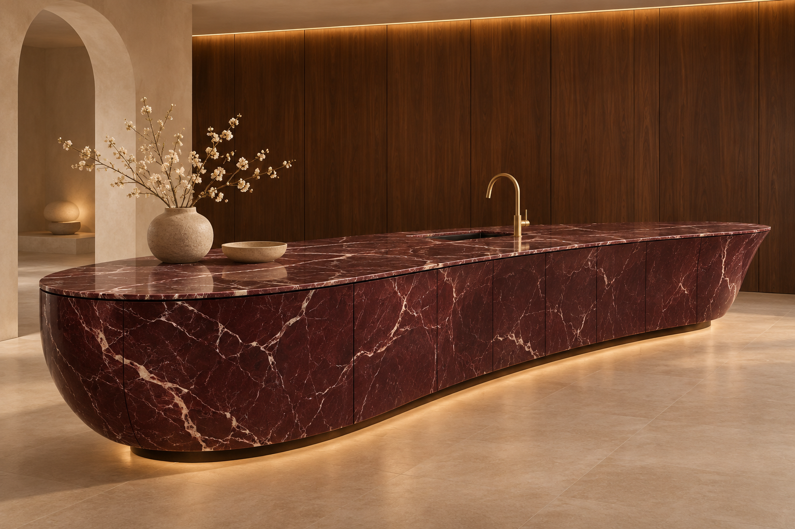

FORM
Organic Pebble
자연석 조약돌에서 가져온 비대칭 곡선. 4미터 길이의 아일랜드가 공간의 중심을 이룹니다.
4,000 × 1,400 × 900 mm 콘셉트 설계 치수
MATERIAL
Rosso Levanto
짙은 버건디 바탕 위로 밝은 베인이 흐릅니다. 상판과 전면, 측면에 무광 혼드 마감의 로쏘 레반토 천연대리석을 적용하는 구상입니다.
CONTRAST
Walnut & Stone
천장까지 이어지는 월넛 건식무늬목 키큰장. 곧게 뻗은 수직선이 아일랜드의 유기적인 곡선을 드러냅니다.
DETAIL
The Beauty of Precision
얇은 상판 엣지
상판의 선명한 윤곽을 강조합니다.
곡면 도어 분할
곡면을 따라 도어의 분할선이 드러납니다.
Floating Pebble
안쪽으로 물린 플린스가 하부에 깊은 그림자를 만듭니다.
BESPOKE
Designed Around You.
공간과 생활 방식에 맞춰 진행하는 맞춤 제작의 제안 흐름입니다.
기획
설치 공간과 생활 방식, 예산과 희망 일정을 상담해 프로젝트의 방향을 정합니다.
설계
현장 치수와 동선을 바탕으로 아일랜드의 형태, 수납 배치, 설비 위치를 구체화합니다.
소재
석재와 월넛 샘플을 비교해 색상과 질감, 마감 조합을 결정합니다.
제작
확정 도면을 기준으로 석재와 가구를 가공하고, 조립 상태와 마감을 점검합니다.
설치
현장에서 가구를 설치한 뒤 수평과 이음부, 도어 작동을 확인하고 관리 방법을 안내합니다.
PRIVATE CONSULTATION
Begin Your
Conversation.
설치 공간과 계획을 알려주세요.
미리보기에서는 예시 정보로 상담 흐름을 체험할 수 있습니다.